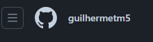
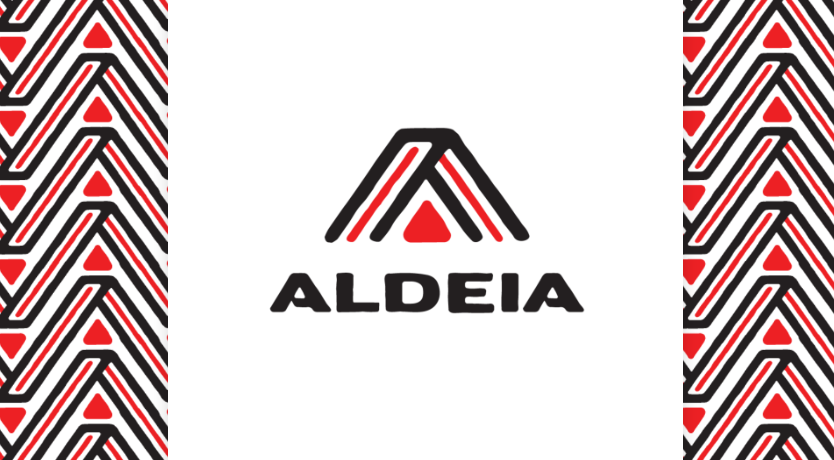

Eu sou um indígena da etnia Baré, tenho 22 anos e estou me graduando
em Engenharia de Software. Atualmente moro em Manaus, mas sou
originario de São Gabriel da Cachoeira,
eu já gostava de computadores quando revolvi migrar de carreira.
Meus Estudos e Objetivos
Estudos
Como já disse estou me graduando em Engenharia de Software, mas antes
disso cursava ciências da computação e consegui internamente trocar
para Engenharia que era meu sonho. Para aumentar ainda mais o meu
currículo eu venho fazendo diversos cursos de temas variados ou que eu
tenha mais interesse, mas em sua maioria relacionados a área de
tecnologia.
Objetivos
Meus Objetivos são varias mas foco principalmente em ingressar na
área, visto que tem sido dificil conseguir uma vaga.
Tenho também focado em aprimorar meu conhecimento em diversas linguas de programação e suas
melhores bibliotecas, assim como treinar esse conhecimento em pequenos projetos da qual estou postando no meu git hub que você pode acessar aqui: Meu GitHub.
Listagem de Trabalhos
GitHub

Atualmente eu não tenho experiência comprovada, mas tenho alguns projetos feitos com ajuda de
alguns colegas e também alguns pequenos projetos que comecei sozinho e que ainda estão em desenvolvimento.
Entre eles destaco uma api de um blog, sendo feito durante o projeto hanami e site
Projeto Hanami
Estou participando de um projeto da RECODE, que visa nos dar experiência de campo como se
tivessemos empregados em projeto real, esse projeto utiliza métodos ágeis e SCRUM e Kanban
que visam melhorar a nossa comunicação em grupo e entregas de codigos de forma a nos ensinar
para quando realmente tivermos empregados. Minha squad é a 8 e tenho mais 2 colegas comigo
trabalhando em uma API de blog, o projeto é privado mas em breve poderei divulga-lo.
Logo do HanamiObjetivos do Hanami
Curso Recode ProAldeia

Logo da Recode Pro Aldeia
Foi um projeto muito interessante e como um dos primeiros a realizar o curso pude contribuir
para melhoara as próximas edições do projeto. Aprendi muito e digo que me deu um upgrade absurdo
no quesito de conhecimento, pois foi a partir deles que realmente me senti confiante de aplicar para vagas
na área de tecnologia, a formação era em Full Stack nas linguas que mais se pedem no mercado. Tenho orgulho de dizer
que finalizei o curso em abril deste ano (2024). Se não bastasse agora estão nos treinando no Hanami
para entender como funcionava a dinâmica de trabalho em empresas de tecnologia e startups.